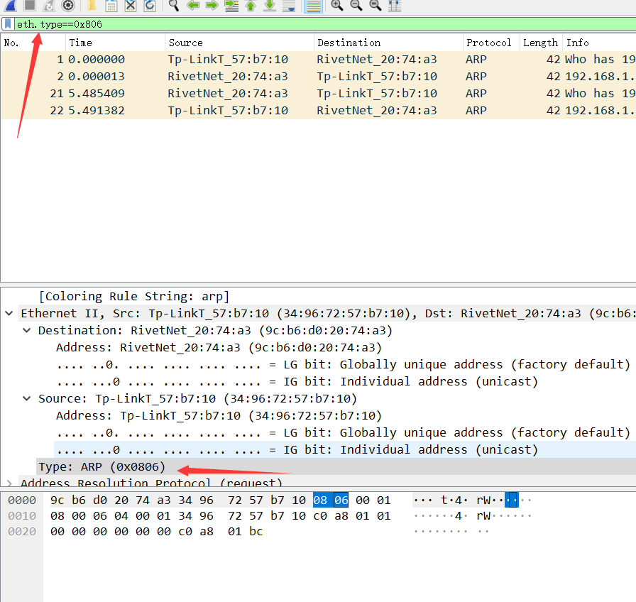
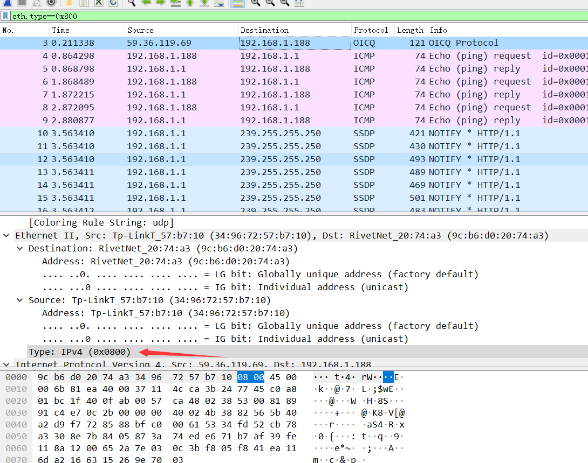
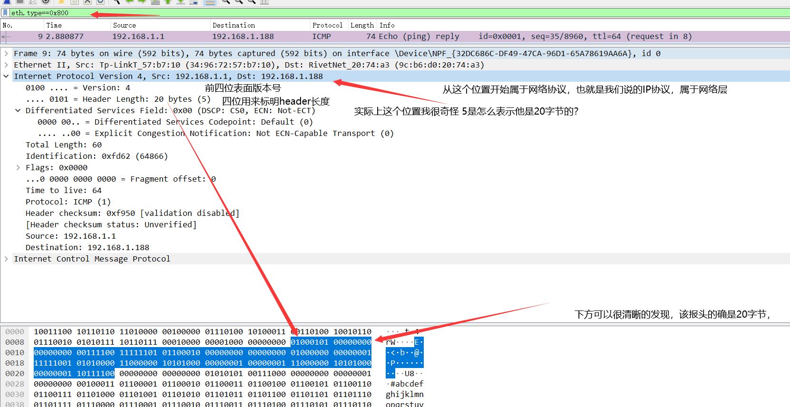
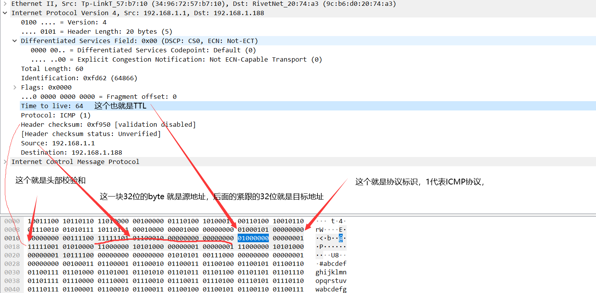

《TCP/IP协议详解卷一》学习笔记(一)
前言：
导师布置下学习任务，正好自己重新回头系统的学习一遍TCP/IP协议族的相关知识。
内容简述：
TCP/IP协议详解卷一，第一章概述，第二章链路层，第三章部分
第一章：
TCP/IP协议起源于6 0年代末美国政府资助的一个分组交换网络研究项目。
TCP/IP协议是一个协议族，通常被认为是一个四层协议系统。具体如下：
-------
|应用层| ---> HTTP, FTP 和e-mail等
-------
|运输层| ---> TCP/UDP
-------
|网络层| ---> IP，ICMP， 和IGMP
-------
|链路层| ---> 设备驱动程序及接口卡，ARP
-------每一层自己理解具体负责功能列举如下：
应用层，这一层实际上是已经完成三次握手后，应用程序相互通信时，由开发者自己定义是数据包格式，属于更进一步的包装，用于在网络程序通信时的逻辑处理，这个在样本分析截获恶意样本通信数据时，会有更明显的感觉，我们平时使用的代理，其所使用最常见的socket5，这个具体分析有机会在补上，已经HTTP协议等。运输层，这一层主要就是在做数据传输的处理，应用层我们可以理解为更进一步的数据打包，这一层就是相当于选择发送包裹的方式了，中通，还是顺丰，其实就是TCP/UDP，TCP（ Transmission Control Protocol）就是传输控制协议，UDP(User Datagram Protocol)就是用户数据报协议，这两个协议在编程时，给我感觉就是TCP有着可控性，能在一定程度上保证数据传输的完整性，而UDP就是要求速度，但丢包后没有重发机制，数据完整性较差，这个协议在做网络视频流媒体，比如直播，视频网站等使用比较多，因为视频一秒有很多帧，一帧丢几个包，实际上不会有太大影响，但可以更快的加载视频。网络层，这一层我没有很实际的编程体验，看书上给我的感觉就是在做选择工作，来判定数据包需要发往哪个IP接口。链路层，实际上就是硬件层，个人感觉这一层主要就是将传输过来的数据，在物理层面转化为数字层面的一个工作。
路由器（Router），书上描述是对不同类型的物理网络提供连接：以太网、令牌环网、 点对点的链接和F D D I（光纤分布式数据接口）等等。但我自己感觉还是没有在实践方面没有更具体的描述，感觉比较抽象。
书中给出一个TCP/IP协议族在实际使用时的结构图：
编程具体使用的API接口我之前只知道socket，书中还提了一个TLI,运输层的接口，回头具体看看，socket用的最多，也就是面向应用层的开发接口，感觉没有特别复杂的地方。
第二章：
首先是以太网和IEEE数据封装，书中的图比较老，我网上找到一张：
根据上图RFC结构规则，
在wireshark中我们可以通过过滤eth.type==0x806来查看arp报，如图：

也可以通过eth.type=0x800来查看IP报，如下：

链路层的部分细节，我主要了解的回环接口的部分细节：
书中给出的关键点：
- 传给环回地址（一般是1 2 7 . 0 . 0 . 1）的任何数据均作为I P输入。
- 传给广播地址或多播地址的数据报复制一份传给环回接口，然后送到以太网上。这是 因为广播传送和多播传送的定义（第 1 2章）包含主机本身。
- 任何传给该主机I P地址的数据均送到环回接口。 看上去用传输层和 I P层的方法来处理环回数据似乎效率不高，但它简化了设计，因为环 回接口可以被看作是网络层下面的另一个链路层。网络层把一份数据报传送给环回接口，就 像传给其他链路层一样，只不过环回接口把它返回到 I P的输入队列中。
实际上简化理解就是，发往自己本机IP的数据包传输路径被简化，而回环接口的存在就是方便这个简化工作。
第三章前半部分：
IPv4数据报头的格式图：
之后根据wireshark抓包我们来具体看IPv4协议报的具体内容:


以上两种图为抓取ICMP协议的数据报文，图中对IP协议部分，根据IP协议头数据格式做了批注。
总结：
《TCP/IP协议详解卷一》比较理论化，书中部分知识点，自己看还是有些地方比较懵，链路层一块的理解还没有特别深刻，网络层协议初步了解了IP协议报头的数据格式，结合wireshark来看，比较直观，能加深理解。